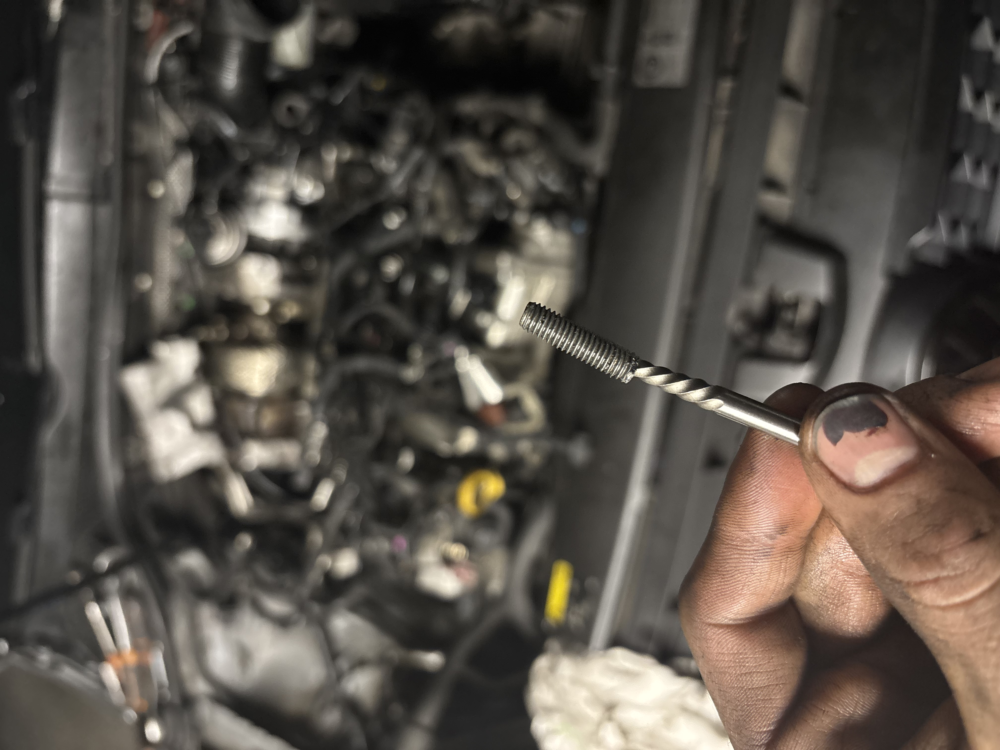
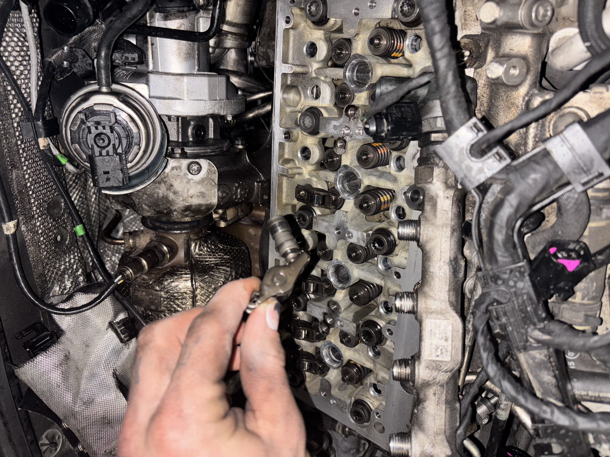

Un service professionnel directement chez vous
Prendre rendez-vousAurum Garage vous propose un service de réparation automobile à domicile à Sartrouville et dans les alentours. Nous intervenons directement chez vous ou sur votre lieu de travail pour simplifier l’entretien et la réparation de votre véhicule.
Notre objectif est simple : vous offrir un service rapide, fiable et professionnel, sans que vous ayez besoin de vous déplacer.
Nous proposons un service sérieux, transparent et efficace, avec des interventions rapides directement à votre domicile.
Nous intervenons principalement à Sartrouville, dans les Yvelines et en Île-de-France.



Besoin d’une intervention ?
Demander une intervention